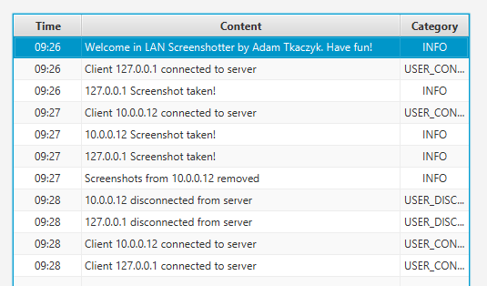

About an idea
Lan Screen Shoot maker is my first "big" project. My IT teacher needed a program to "control students desktops". Soo I decided to create this program for him. Of course, I will give this tool after graduation :)
How it works?
The mechanism is simple. All computers are connected via LAN (with Wi-Fi works too). One of them have an admin panel. Other computers have a hidden service that start, at operation system startup. Admin see all of connected clients on left pane. To take a screenshot, he have to pick a client and click photo icon in the bottom. There are buttons to show screenshot gallery of selected client, remove client's screenshots and info button.
Additional logger
There is a simple logger on right side. Logger log information about new clients connections, making screenshots or disconnections.
Link to admin panel source code is here and client code is here.